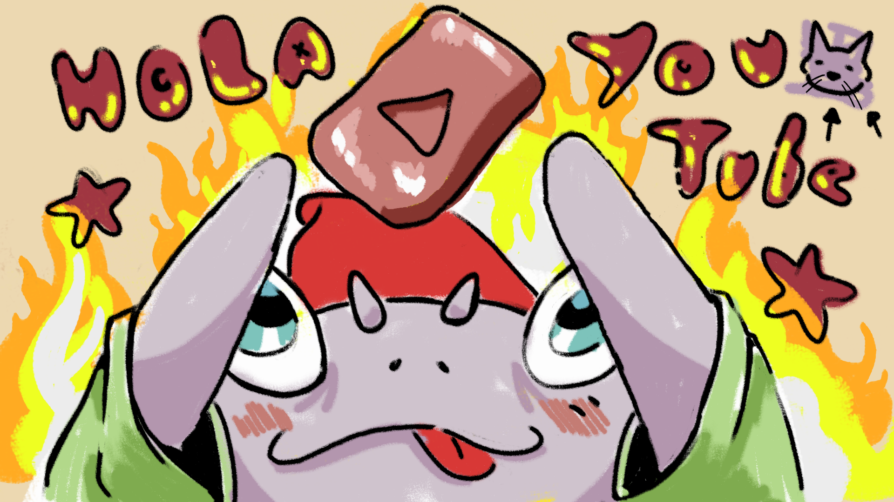

en este "blog" creo que es un blog... sitio web sera sitio web, porque es un sitio en la web, no?
bien no se muy bien para que voy a ocupar este lugar veanlo como un sitio de pruebas en lo que veo como sacarle
provecho.
por ahora solo estoy ablando de un canal que no vio la luz

miniatura del canal que nunca cree
aqui para rellenar un poco, les comparto lo que es mi video para youtube que se quedo en
obra negra